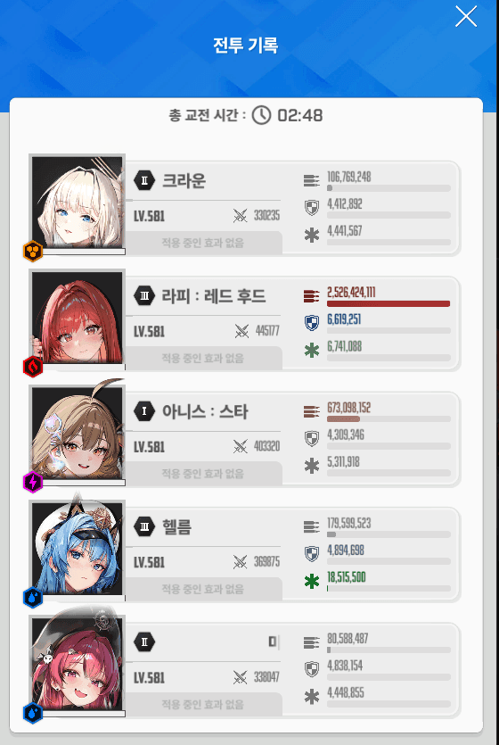

조합은 크라아헬메
버스트를 무지성으로 쓰면 방패들때 딜이 다막히기때문에
버스트 조절이 핵심임
버스트 순서대로 설명하겠음
1. 아크라 or 아메라 시작
딜200줄이라도 더넣고 싶으면 마스트키면 되는데
대신 눈깔빔쏠때 살짝 엄폐해줘야함
ㄴ문제의 투사체 (리트의 주원인)
보고 피해야함 + 한쪽에 2개 날아가면 리트
태보하면서 가장 주의해야할점은
반드시 반드시 반드시
엄폐물 체력을 아껴야 한다는것임
2. 아크헬
다음은 속성저지원이 나오는데
저지를 최대한 늦게 해줘야함
여기서 저지를 너무 빠르게 해버리면
뒤에 이어질 아마라 버스트 이후에 버충할새 없이 족자저지로 들어가버림
3. 아메라
파츠는 라피 폭발로 부수기
버스트 종료전에 헬름 대기해두고 최대한 버충후 족자 진입
4. 아크헬
족자저지 들어가기전이든 후든 최대한 빠르게 버스트를 키고
저지 안에서 버스트를 소모해야함
5. 아메라
족자 끝나면 5초정도후에 방패를 들기때문에
최대한 빨리 버스트 켜서 딜 욱여넣기
체력 5100줄 정도 남았으면 클각
6. 버스트 안쓰고 가만히 태보하기
이때 나오는 투사체는 첫번째랑 다르게
투사체 쏘는 간격이 조금 길어서
아주 쉽게 피할수있음
방패 들면 어차피 딜 안들어가니 태보에 집중
7. 아크헬
파동을 2대 맞아야함
실드로 한대 막고
몸으로 한대 맞기
이후에 파동패턴이 또한번있기때문에
여기서 몸이랑 실드로 막아서 엄폐물 체력을 살려둬야함
8. 아크라
파츠 부수기
9. 아메헬
방패 전에 2스택메스트 털기
버스트 한차례후 바로 방패를 들어서
2스택 메스트를 여기서 쓰고 가는거임
10. 이후 파동패턴은 똑같이 하면 끝남
방패들때 아크라 켜서 버스트 돌리고
파동쓸때 아크헬
이후에 아메라 아크헬 끝